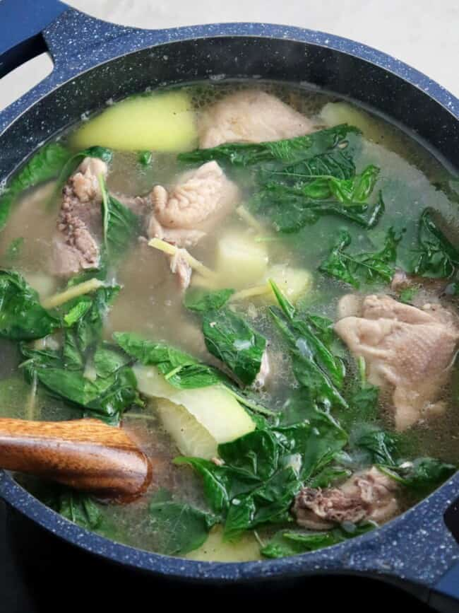

TINOLANG MANOK

Tinolang Manok is the ultimate comfort food! Made of chicken, green papaya, fresh spinach, and a ginger-flavored broth, this Filipino soup is hearty, healthy, and tasty.
Cooking Tips
- Cut the chicken in uniform size to ensure even cooking.
- Although you can use boneless chicken meat, bone-in parts yield the best flavor.
- The recipe calls for green papaya but you can also use chayote, potatoes or upo.
- I use fresh spinach leaves as they are more accessible, but Malunggay or chili leaves are more traditional options.
How to serve
Tinola is traditionally served as a main dish for lunch or dinner. It’s common to partake of the dish with steamed rice and fish sauce as a condiment on the side.
Storing leftovers
- To store, transfer in a container with a tight-fitting lid and refrigerate for up 3 days or freeze for up to 2 months.
- To reheat, place in a saucepan and cook to an internal temperature of 165 F.
Ingredients
- 1 tablespoon canola oil
- 1 small onion, peeled and sliced thinly
- 2 thumb-sized fresh ginger
- 1 (3 to 4 pounds) whole chicken, cut into serving pieces
- 2 tablespoons fish sauce
- 2 bay leaves
- 5 cups water
- 1 small green papaya, pared, seeded and cut into 2-inch wedge
- 1 bunch fresh spinach leaves, stems trimmed
- 1salt and pepper to taste
Instructions
- In a pot over medium heat, heat oil. Add onions, ginger, and garlic and cook until softened.
- Add chicken and cook, stirring occasionally, for about 5 to 7 minutes or until chicken starts to change color and juices run clear.
- Add fish sauce and cook, stirring occasionally, for about 1 to 2 minutes.
- Add water and bring to a boil, skimming scum that floats on top. Lower heat, cover and simmer for about 30 to 35 minutes or until chicken is cooked through.
- Add papaya and cook for about 3 to 5 minutes or until tender yet crisp.
- Season with salt and pepper to taste.
- Add spinach and push down into broth. Cook until just wilted. Serve hot.
Notes
- Cut the chicken in uniform size to ensure even cooking.
- For a clear, cloud-free broth, remove any scum that floats on top.